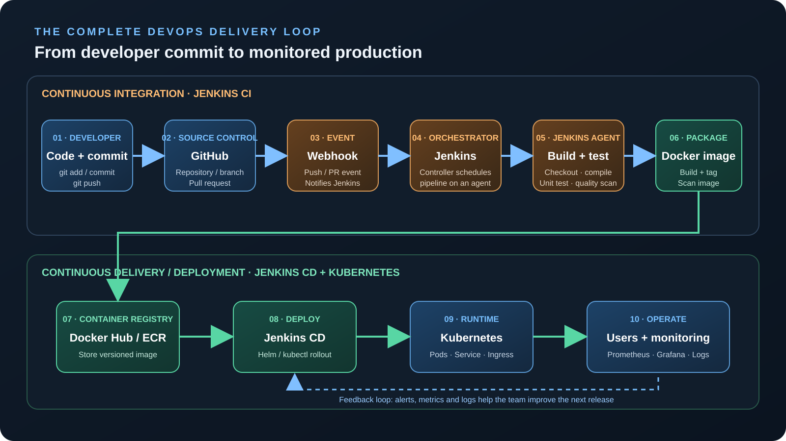

1. Source control
Update the static website, commit the change and push it to GitHub.
Continuous Integration (CI) automatically validates changes as developers commit code. Continuous Delivery or Deployment (CD) automates preparing and releasing validated software to an environment.
Continuous Integration (CI) automatically validates changes as developers commit code. Continuous Delivery or Deployment (CD) automates preparing and releasing validated software to an environment.
Pipelines make releases repeatable, faster and easier to audit. They reduce manual steps and help catch defects before code reaches production.

A code push triggers a pipeline: checkout, quality checks, tests, build, image publish, approval and deployment.
See a working local deployment workflow using Jenkins Poll SCM, GitHub, Docker Compose and Nginx. A code change is pushed to GitHub, Jenkins detects the new commit, validates the website files and deploys them to the Nginx container—without manually triggering a build.
Update the static website, commit the change and push it to GitHub.
Jenkins checks the configured Git branch every minute using the Poll SCM schedule * * * * *.
The Jenkinsfile checks out the repository and verifies that the demo HTML file exists and contains HTML markup.
Jenkins copies the website files into a shared Docker volume, and Nginx serves the updated page.
Try it yourself: Clone the repository, follow the nginx-demo/README setup steps, change the release text in nginx-demo/site/index.html, push the commit and watch Jenkins deploy it.
Jenkins is the automation engine in this example: it receives a GitHub event, runs CI checks on an agent, builds and publishes a Docker image, then can trigger a controlled Kubernetes deployment.

An event such as push, pull request, tag or schedule starts a workflow.
The machine or container that executes pipeline steps.
A job groups steps; jobs can run sequentially or in parallel.
A build output retained or passed between jobs.
A protected value injected at runtime; never print it in logs.
A deployment target with protection rules and manual gates.
A planned way to return to a known-good release.
Run these in a lab environment first. Some commands require the related tool to be installed and configured.
| Command | What it does | When you use it |
|---|---|---|
git push origin main | Push code to a remote | Trigger a push-based workflow. |
gh workflow list | List GitHub Actions workflows | Inspect workflow configuration using GitHub CLI. |
gh run list | List recent workflow runs | Find failed or successful pipeline executions. |
gh run view RUN_ID --log | View a workflow run log | Troubleshoot a failed job. |
docker build -t app:$GIT_SHA . | Build a versioned image | Tag an image with a traceable commit identifier. |
docker push registry/app:tag | Publish an image | Make a build available to deployment systems. |
Build a pipeline for your sample app: run tests on pull requests, build a Docker image on main, tag it with the commit SHA and publish it to a container registry. Document how you would roll back.
Tip: Save your notes, commands, screenshots and troubleshooting findings in a GitHub repository. Your learning record becomes part of your portfolio.
Checklist is for your current visit; it is not saved between devices or browser sessions.